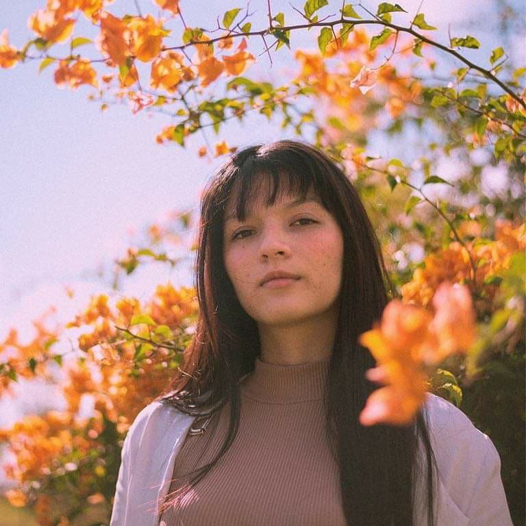
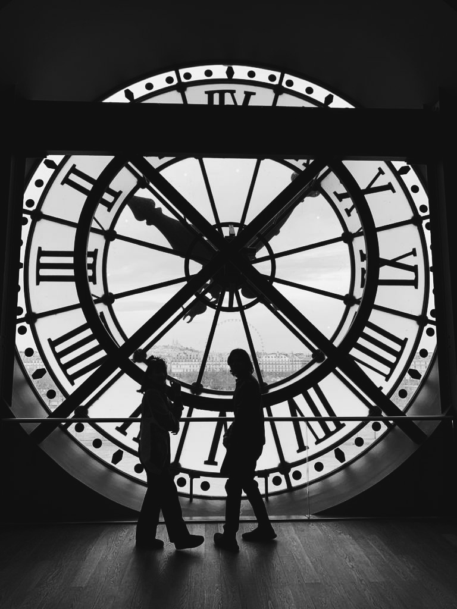
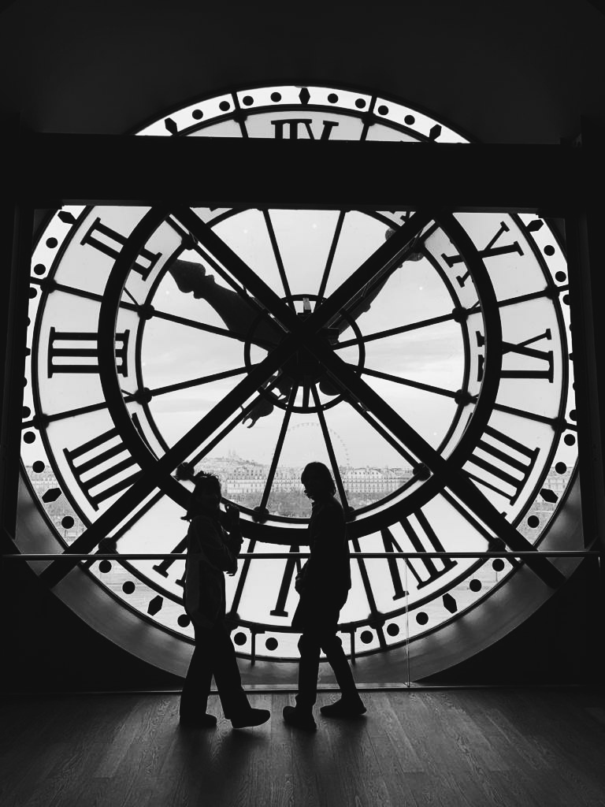
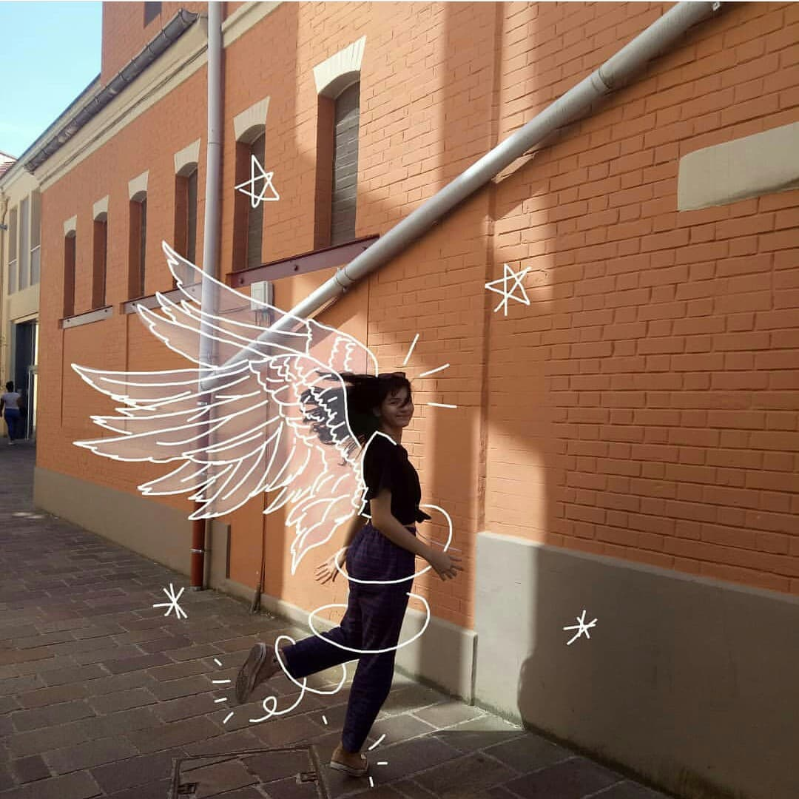
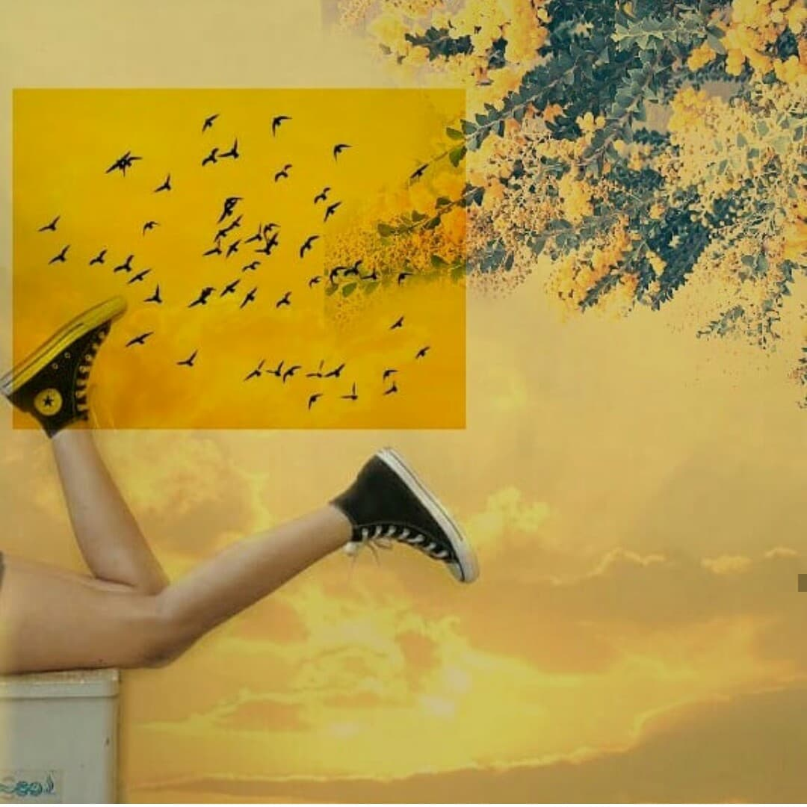

Hi, I'm Carine
I'm a French-Laotian Essec student passionated by photography , digital drawing, and art in general.
Photography 📷
“Taking an image, freezing a moment, reveals how rich reality truly is.”
Photography has always been a big part of my artistic journey
 


Digital drawings ✏️
What I love about drawing digitally is :
Edits ❤️
I love edits because they are perfect combination between photography and drawing.
 